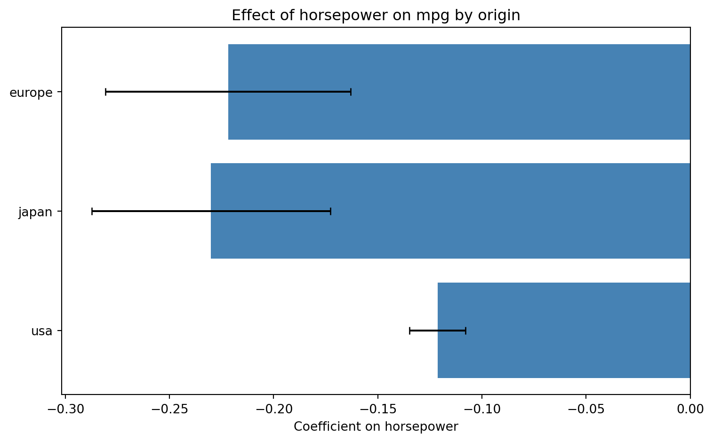
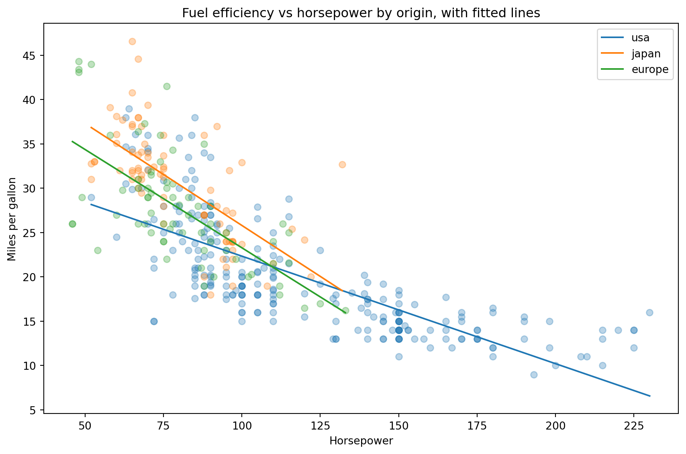

We use for loops to automate common regression workflows such as estimating the same model separately across subgroups, and progressively adding variables to build up a set of model specifications.
import pandas as pdimport numpy as npimport matplotlib.pyplot as pltimport statsmodels.formula.api as smfplt.style.use("seaborn-v0_8-whitegrid")gapminder = pd.read_csv("data/gapminder.csv")gap_2007 = gapminder[gapminder["year"] ==2007].copy()gap_2007["log_gdp"] = np.log(gap_2007["gdpPercap"])gap_2007["pop_millions"] = gap_2007["pop"] /1_000_000# --- Example 1: Same model across subgroups ---# Estimate the relationship between log GDP and life expectancy# separately for each continentcontinents = gap_2007["continent"].unique()continent_results = []for continent in continents: subset = gap_2007[gap_2007["continent"] == continent]# Skip continents with too few observations to fit the modeliflen(subset) <3:continue fit = smf.ols("lifeExp ~ log_gdp", data=subset).fit() continent_results.append({"continent": continent,"coefficient": fit.params["log_gdp"],"ci_low": fit.conf_int().loc["log_gdp", 0],"ci_high": fit.conf_int().loc["log_gdp", 1], })continent_df = pd.DataFrame(continent_results)continent_df# --- Bar plot with confidence intervals ---fig, ax = plt.subplots()ax.barh(continent_df["continent"], continent_df["coefficient"], color="steelblue")ax.errorbar(continent_df["coefficient"], continent_df["continent"], xerr=[continent_df["coefficient"] - continent_df["ci_low"], continent_df["ci_high"] - continent_df["coefficient"]], fmt="none", color="black", capsize=3)ax.set_xlabel("Coefficient on log GDP per capita")ax.set_title("Effect of log GDP on life expectancy by continent")plt.show()plt.close()# --- Example 2: Progressively adding variables ---# Build model formulas programmatically using f-strings and join()controls = ["log_gdp", "pop_millions", "C(continent)"]models = []for i inrange(1, len(controls) +1):# join() combines list elements into a single string separated by " + " rhs =" + ".join(controls[:i]) formula =f"lifeExp ~ {rhs}"print(f"Model {i}: {formula}") models.append(smf.ols(formula, data=gap_2007).fit())# The list "models" now holds three fitted model objectsprint(models[0].summary())
Exercises
Exercise 5.3.1
Estimate the relationship between mpg and horsepower separately for each origin group, following the same loop pattern shown in the video.
import seaborn as snsimport pandas as pdimport statsmodels.formula.api as smfmpg = sns.load_dataset("mpg").dropna(subset=["horsepower"])
Get the unique values of origin. Loop over them, and for each one: filter mpg to that group, skip it if it has fewer than 3 rows, fit mpg ~ horsepower, and append a dictionary with the group name, the coefficient on horsepower, and its 95% confidence interval to a list.
Convert the list to a DataFrame called origin_df and print it. Which origin has the steepest (most negative) horsepower penalty?
Now fit a single pooled model on the full mpg data using horsepower * C(origin) — the fully interacted model from exercise 5.1.5. Reconstruct each origin’s slope by adding the relevant interaction coefficient to the main horsepower coefficient (remember, the reference category has no interaction term to add). Compare these reconstructed slopes to the ones in origin_df.
The two approaches should give you the same coefficients. Name one practical difference between running separate regressions per group and running a single pooled model with full interactions.
Solution
import seaborn as snsimport pandas as pdimport statsmodels.formula.api as smfmpg = sns.load_dataset("mpg").dropna(subset=["horsepower"])# 1-2. Loop over origin groupsorigins = mpg["origin"].unique()origin_results = []for origin in origins: subset = mpg[mpg["origin"] == origin]iflen(subset) <3:continue fit = smf.ols("mpg ~ horsepower", data=subset).fit() origin_results.append({"origin": origin,"coefficient": fit.params["horsepower"],"ci_low": fit.conf_int().loc["horsepower", 0],"ci_high": fit.conf_int().loc["horsepower", 1], })origin_df = pd.DataFrame(origin_results)print(origin_df)
origin coefficient ci_low ci_high
0 usa -0.121320 -0.134775 -0.107865
1 japan -0.230043 -0.287400 -0.172686
2 europe -0.221835 -0.280688 -0.162982
Intercept 45.473726
C(origin)[T.japan] 3.342488
C(origin)[T.usa] -10.997230
horsepower -0.221835
horsepower:C(origin)[T.japan] -0.008208
horsepower:C(origin)[T.usa] 0.100515
dtype: float64
Europe slope (interaction model): -0.22183522355296903
Japan slope (interaction model): -0.2300429524548467
USA slope (interaction model): -0.12132003702067533
Japan has the steepest horsepower penalty (about -0.23), followed closely by Europe (about -0.22). American cars have a notably flatter slope (about -0.12).
The reconstructed slopes from the interaction model match the separately estimated slopes in origin_df exactly, since europe is the reference category (no interaction term needed) and the japan/usa interaction terms represent exactly the difference in slope needed to recover each group’s own coefficient.
Both approaches produce identical coefficient estimates when every variable is fully interacted with the group. They differ, however, in how the residual variance is estimated: separate regressions estimate it independently within each group, using only that group’s own observations, while the pooled model assumes one common residual variance across all groups, estimated using the full sample. This means the pooled model’s standard errors (and therefore its confidence intervals) can differ from the separate regressions’ — often tighter, since it borrows statistical strength from the full dataset, which matters especially for smaller groups. The pooled model also lets you test directly whether a slope differs significantly between groups via the interaction term’s p-value, something separate regressions do not give you automatically.
Exercise 5.3.2
Visualize the origin_df results from the previous exercise as a horizontal bar chart with error bars, as shown in the video.
import pandas as pdimport matplotlib.pyplot as plt# origin_df from exercise 5.3.1
Create a Figure and Axes, and plot origin_df["coefficient"] against origin_df["origin"] using ax.barh().
Add error bars using ax.errorbar(), with xerr= set to the distance from each coefficient to its lower and upper confidence bound, fmt="none", and capsize=3.
Add axis labels and a title.
Based on the chart, do the confidence intervals for the three origins overlap with each other, or are they clearly separated?
Solution
import pandas as pdimport matplotlib.pyplot as pltorigin_df = pd.DataFrame({"origin": ["usa", "japan", "europe"],"coefficient": [-0.121320, -0.230043, -0.221835],"ci_low": [-0.134775, -0.287400, -0.280688],"ci_high": [-0.107865, -0.172686, -0.162982]})fig, ax = plt.subplots(figsize=(8, 5))ax.barh(origin_df["origin"], origin_df["coefficient"], color="steelblue")ax.errorbar( origin_df["coefficient"], origin_df["origin"], xerr=[origin_df["coefficient"] - origin_df["ci_low"], origin_df["ci_high"] - origin_df["coefficient"]], fmt="none", color="black", capsize=3)ax.set_xlabel("Coefficient on horsepower")ax.set_title("Effect of horsepower on mpg by origin")plt.tight_layout()plt.show()

The confidence interval for the USA is clearly separated from Japan and Europe’s intervals, suggesting American cars genuinely have a flatter horsepower-mpg relationship. Japan and Europe’s intervals overlap substantially with each other, suggesting their slopes are not clearly distinguishable from one another given the sample size within each group.
Exercise 5.3.3
Combine the subgroup loop from 5.3.1 with the regression-line visualization from Topic 5.2: plot each origin’s regression line on the same scatter plot.
import seaborn as snsimport pandas as pdimport numpy as npimport statsmodels.formula.api as smfimport matplotlib.pyplot as pltmpg = sns.load_dataset("mpg").dropna(subset=["horsepower"])
Create a Figure and Axes with figsize=(9, 6).
Loop over each origin group. For each one: filter the data, plot the raw points as a scatter with alpha=0.3 (no separate label needed for the points), fit mpg ~ horsepower, generate 50 evenly spaced horsepower values spanning that group’s own range using np.linspace(), predict, and plot the resulting line with label=origin.
Add axis labels, a title, and call ax.legend().
Do the three lines look roughly parallel, or do they clearly diverge? Does this match what you found in exercise 5.3.1?
Solution
import seaborn as snsimport pandas as pdimport numpy as npimport statsmodels.formula.api as smfimport matplotlib.pyplot as pltmpg = sns.load_dataset("mpg").dropna(subset=["horsepower"])fig, ax = plt.subplots(figsize=(9, 6))for origin in mpg["origin"].unique(): subset = mpg[mpg["origin"] == origin] fit = smf.ols("mpg ~ horsepower", data=subset).fit() hp_vals = np.linspace(subset["horsepower"].min(), subset["horsepower"].max(), 50) new_data = pd.DataFrame({"horsepower": hp_vals}) new_data["predicted"] = fit.predict(new_data) ax.scatter(subset["horsepower"], subset["mpg"], alpha=0.3) ax.plot(new_data["horsepower"], new_data["predicted"], label=origin)ax.set_xlabel("Horsepower")ax.set_ylabel("Miles per gallon")ax.set_title("Fuel efficiency vs horsepower by origin, with fitted lines")ax.legend()plt.tight_layout()plt.show()

The American line is visibly flatter than the Japanese and European lines, which slope down more steeply and sit close to parallel with each other — the same pattern already visible numerically in the coefficients from exercise 5.3.1. Building the chart this way makes that difference immediately visible, rather than requiring you to compare three separate numbers by eye.
Exercise 5.3.4
Practice the progressive-variable loop pattern from the video, this time using mpg and its own set of explanatory variables.
import seaborn as snsimport pandas as pdimport statsmodels.formula.api as smfmpg = sns.load_dataset("mpg").dropna(subset=["horsepower"])mpg["weight_tons"] = mpg["weight"] /1000
Define a list controls = ["horsepower", "weight_tons", "C(origin)"].
Loop over range(1, len(controls) + 1). On each iteration, use " + ".join() to build the right-hand side of the formula from controls[:i], construct the full formula string with an f-string, print it, fit the model, and append the fitted model to a list called models.
Print the .summary() of the last model in the list — the one with all three variables.
Solution
import seaborn as snsimport pandas as pdimport statsmodels.formula.api as smfmpg = sns.load_dataset("mpg").dropna(subset=["horsepower"])mpg["weight_tons"] = mpg["weight"] /1000controls = ["horsepower", "weight_tons", "C(origin)"]models = []for i inrange(1, len(controls) +1): rhs =" + ".join(controls[:i]) formula =f"mpg ~ {rhs}"print(f"Model {i}: {formula}") models.append(smf.ols(formula, data=mpg).fit())
Model 1: mpg ~ horsepower
Model 2: mpg ~ horsepower + weight_tons
Model 3: mpg ~ horsepower + weight_tons + C(origin)
The loop builds three increasingly complex formulas — mpg ~ horsepower, mpg ~ horsepower + weight_tons, and mpg ~ horsepower + weight_tons + C(origin) — using exactly the same .join() and slicing pattern as the video, just applied to a different list of controls.
Exercise 5.3.5
Use the models list from the previous exercise to see how model fit changes as variables are added.
# models list from exercise 5.3.4
Loop over models with enumerate(), starting the count at 1, and print each model’s number alongside its R-squared, rounded to 4 decimal places.
By how much does R-squared increase when weight_tons is added to the model with just horsepower? By how much does it increase again when C(origin) is added on top of that?
Based on these increases, which variable contributes more additional explanatory power: weight_tons or C(origin)?
Solution
for i, model inenumerate(models, start=1):print(f"Model {i} R-squared: {model.rsquared:.4f}")
Model 1 R-squared: 0.6059
Model 2 R-squared: 0.7064
Model 3 R-squared: 0.7193
R-squared rises from about 0.6059 to about 0.7064 when weight_tons is added — an increase of roughly 0.10. Adding C(origin) on top brings R-squared to about 0.7193 — a much smaller further increase of roughly 0.013.
weight_tons contributes far more additional explanatory power than C(origin). This is a useful pattern to notice: the biggest jumps in R-squared often come from the first one or two genuinely important variables, while additional variables — even meaningful ones — tend to add progressively less once the main drivers are already in the model.